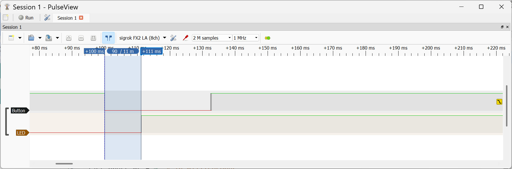
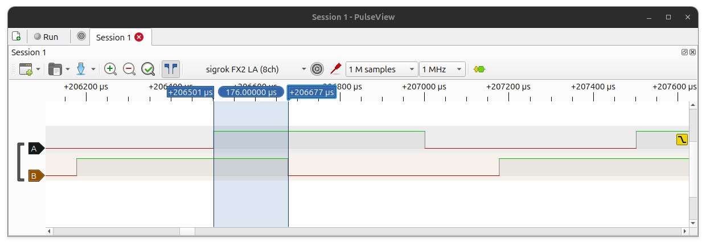

ตัวอย่างการเขียนโค้ด MicroPython สำหรับบอร์ด Espressif ESP32 (ตอนที่ 3)#
Keywords: Python 3, MicroPython, Espressif SoCs, ESP32 / ESP32-S3, Thonny IDE, Arduino Lab for MicroPython, Wokwi
- Example 21: Using ESP32 Timer for an Interrupt-driven Task
- Example 22: Using ESP32 Timer in One-Shot and Periodic Modes
- Example 23: Multi-Pin I/O Toggle Using Multiple ESP32 Timers
- Example 24: Software Timer for Periodic Tasks
- Example 25: Push Button Interrupt with Deferred Execution
- Example 26: Event-Driven LED Toggle Using Push Button Interrupt
- Example 27: Quadrature Pulse Signal Generation with AsyncIO Delays
- Example 28: Generating Quadrature Pulse Signals Using Hardware Timer
- Example 29: Generating Quadrature Pulse Signals Using ESP32 RMTs
▷ Example 21: Using ESP32 Timer for an Interrupt-driven Task#
การใช้งานวงจร Hardware Timer ของ ESP32 ใน MicroPython
จะเกี่ยวข้องกับคลาส machine.Timer สำหรับการทำงานตามระยะเวลาที่ตั้งไว้
เมื่อครบกำหนดเวลา ฟังก์ชันประเภท Callback (Interrupt Handler) ที่เกี่ยวข้องจะถูกเรียกใช้งาน
Timer มีโหมดหลัก 2 แบบ คือ
Timer.ONE_SHOT- ทำงานเพียงครั้งเดียวเมื่อครบเวลาที่กำหนดTimer.PERIODIC- ทำงานซ้ำเป็นรอบ ๆ ตามคาบเวลาที่ตั้งไว้
การกำหนดช่วงเวลาสามารถทำได้ 2 วิธี คือ
- กำหนดคาบเวลา (
periodหน่วยเป็นมิลลิวินาที) หรือ - กำหนดความถี่ (
freqหน่วยเป็น Hz)
ชิป ESP32 ปกติจะมี Hardware Timers อยู่ 4 ชุด (หมายเลข id: 0–3) ให้ใช้งาน แต่จำนวนนี้ อาจแตกต่างกันในรุ่นย่อยของชิป เช่น
- ESP32 / ESP32S2 / ESP3S3: 4
- ESP32C4 / ESP32C6 / ESP32H4: 2
ตัวอย่างนี้สาธิตการเปิดใช้งาน ESP32 Timer โดยเลือกใช้ Timer 0
ในโหมด Periodic และใช้ความถี่ค่อนข้างสูง เช่น 10kHz (กำหนดค่าโดยใช้ตัวแปร TIMER_FREQ_HZ)
เมื่อนับเวลาได้ตามที่กำหนดไว้ จะเกิดอินเทอร์รัพท์ และเรียกให้ฟังก์ชัน Callback ทำงาน (ในโค้ดตัวอย่างคือ ฟังก์ชัน toggle_led)
เช่น ให้สลับสถานะลอจิกของ GPIO หนึ่งขา (เช่น GPIO-11)
เมื่อนำไปทดลองกับบอร์ด ESP32 จริง จะใช้ออสซิลโลสโคปวัดสัญญาณเอาต์พุตที่ขา GPIO
เพื่อดูผลการตอบสนองจากการทำงาน
from machine import Pin, Timer
import time
TIMER_FREQ_HZ = 10_000 # Set the timer frequency (use a high value)
led = Pin(11, Pin.OUT) # Configure a GPIO pin for output
# Define a callback function for timer
def toggle_led(timer):
led.toggle() # Toggle the LED
# Create a hardware timer (ESP32 timer 0)
tim = Timer(0)
# Start the timer in periodic mode
tim.init(freq=TIMER_FREQ_HZ, mode=Timer.PERIODIC, callback=toggle_led)
try:
while True:
time.sleep(1.0)
except KeyboardInterrupt:
print("Terminated...")
finally:
tim.deinit() # Stop the timer
ตัวอย่างการวัดสัญญาณเอาต์พุตด้วยอุปกรณ์ USB Logic Analyzer มีดังนี้
รูป: การวัดสัญญาณเอาต์พุต เมื่อใช้ความถี่สำหรับ Timer เท่ากับ 10 kHz ซึ่งจะต้องมีระยะเวลาในการสลับสถานะลอจิกแต่ละครั้งเท่ากับ 100 usec
แต่ถ้าใช้ความถี่สูงขึ้น ระยะเวลาของแต่ละช่วงของสัญญาณพัลส์ จะเริ่มมีความผิดพลาดจากค่าที่ต้องการ หรือถ้าความถี่สูงเกินไป จะทำให้ฟังก์ชัน Callback ตอบสนองและทำงานไม่ทันอัตราการเกิดอินเทอร์รัพท์จากวงจร Timer ดังนั้นในการใช้ Hardware Timer ของ ESP32 จะต้องคำนึงข้อจำกัดของความถี่ด้วย
▷ Example 22: Using ESP32 Timer in One-Shot and Periodic Modes#
ตัวอย่างนี้สาธิตการเปิดใช้งานวงจร ESP32 Hardware Timer โดยเริ่มต้นจะทำงานในโหมด
One-Shot (เช่น กำหนดระยะเวลาไว้ 1000 msec) และเมื่อครบระยะเวลาดังกล่าว
ฟังก์ชัน oneshot_cb(...) จะทำงานหนึ่งครั้งแล้ว มีการปรับโหมดการทำงานใหม่เป็น Periodic
ฟังก์ชัน Callback ที่เกี่ยวข้องคือ periodic_cb() ในแต่ละครั้งที่ทำงาน
จะมีการสลับสถานะลอจิกที่ขา GPIO สำหรับ LED หนึ่งครั้ง
และมีการเพิ่มคาบเวลา เริ่มต้นที่ 10 msec เป็นสองเท่า
ไปจนกว่าคาบเวลาจะมากกว่า 200 msec จึงจะหยุดการทำงานของ Timer
from machine import Pin, Timer
import time
led = Pin(11, Pin.OUT, value=0) # Configure a GPIO pin for LED output
time.sleep_ms(100)
tim = Timer(0) # Create a Timer object (ID = 0)
timer_period = 10 # Initial timer period in ms
# Callback for the timer in periodic mode
def periodic_cb(timer):
global timer_period
led.toggle() # Toggle the LED state
timer_period += 10 # Increment the timer period
# Reinitialize the timer with the new period
timer.init(period=timer_period, mode=Timer.PERIODIC,
callback=periodic_cb)
if timer_period > 200:
timer.deinit() # Stop the timer if period exceeds 200 ms
# Callback for the timer in one-shot mode
def oneshot_cb(timer):
global timer_period
led.on() # Turn on the LED when one-shot fires
# Restart the timer in periodic mode
timer.init(period=timer_period, mode=Timer.PERIODIC,
callback=periodic_cb)
led.on() # Turn the LED in before starting the timer
# Start the timer in one-shot mode (fires after 1000 ms)
tim.init(period=1000, mode=Timer.ONE_SHOT, callback=oneshot_cb)
try:
while True:
time.sleep(1) # Main loop does nothing, timer runs in background
except KeyboardInterrupt:
tim.deinit() # Stop the timer on Ctrl+C
print("Terminated..")
ตัวอย่างการวัดสัญญาณเอาต์พุตด้วยอุปกรณ์ USB Logic Analyzer มีดังนี้
รูป: สัญญาณเอาต์พุต ซึ่งจะเห็นได้ว่า มีการสลับสถานะลอจิกของสัญญาณ ช่วงแรกกว้างประมาณ 1000msec ซึ่งเกิดจากการทำงานในโหมด One-Shot ในช่วงถัดไป มีความกว้างของพัลส์ที่เกิดขึ้นไม่คงที่ (เพิ่มขึ้นตามลำดับ) ซึ่งเป็นผลจากการทำงานของ Timer ในโหมด Periodic ตามรูปแบบที่กำหนดไว้
▷ Example 23: Multi-Pin I/O Toggle Using Multiple ESP32 Timers#
ตัวอย่างถัดไปเป็นการเปิดใช้งาน ESP32 Timers จำนวน 4 ชุด พร้อมกัน มีคาบเวลาเท่ากับ 10 msec (หรือ 100Hz) เหมือนกัน โดยแต่ละชุด จะให้มีฟังก์ชันทำงานเป็นคาบเวลา (Periodic Timer Mode) และทำหน้าที่สลับสถานะลอจิกของขา GPIO ที่เกี่ยวข้อง ในตัวอย่างนี้ มีการหน่วงเวลาก่อนเริ่มต้นการทำงานของวงจร Timer แต่ละชุด เช่น 5 msec ตามลำดับ
#-------------------------------------------------------------------------
# This example demonstrates how to use multiple ESP32 hardware timers to
# toggle four GPIO pins independently at a fixed rate.
# Each pin is assigned its own periodic timer callback, with a small
# start delay (e.g. 5msec) between timers to offset their toggle phases.
# The main loop remains idle while the timers handle all I/O toggling
# in the background.
#-------------------------------------------------------------------------
from machine import Pin, Timer
import time
# List of GPIO pin numbers to use
gpio_nums = [11, 12, 13, 14]
# Create Pin objects for each GPIO and set as output
pins = [Pin(gpio, mode=Pin.OUT, value=0) for gpio in gpio_nums]
time.sleep_ms(100)
# Factory function to create a timer callback for a specific pin
def make_timer_callback(pin):
def _callback(timer):
pin.toggle() # Toggle pin state (HIGH ↔ LOW)
return _callback # Return the callback function
# List to store Timer objects
timers = []
# Create Timer objects (one per pin)
for i in range(len(pins)):
timers.append(Timer(i)) # Create a Timer object first
extra_start_delay_ms = 5
# Initialize and start each timer
for i, timer in enumerate(timers):
timer.init(
period=10, # Timer period in milliseconds
mode=Timer.PERIODIC, # Periodic mode
callback=make_timer_callback(pins[i]) # Toggle the corresponding pin
)
time.sleep_ms( extra_start_delay_ms)
try:
while True:
time.sleep(1) # Main loop does nothing, timers run in background
except KeyboardInterrupt:
# Stop all timers on Ctrl+C
for tim in timers:
tim.deinit()
print("Terminated...")
ตัวอย่างการวัดสัญญาณเอาต์พุตด้วยอุปกรณ์ USB Logic Analyzer มีดังนี้
รูป: สัญญาณเอาต์พุตจากขา GPIO จำนวน 4 สัญญาณ ที่มีลักษณะเหมือนกัน (ความถี่เท่ากัน และมีค่า Duty Cycle = 50%) แต่มีความต่างเฟสของแต่ละสัญญาณตามลำดับ (เกิดจากการเลื่อนเวลาแต่ละสัญญาณประมาณ 5msec)
▷ Example 24: Software Timer for Periodic Tasks#
ถัดไปเป็นตัวอย่างการสร้างคลาส (ชื่อ SoftwareTimer) สำหรับ MicroPython
เพื่อใช้งาน ESP32 Hardware Timer จำนวน 1 วงจร
และรองรับการเพิ่มฟังก์ชัน เพื่อให้สามารถเรียกฟังก์ชันเหล่านั้นให้ทำงานตามคาบเวลาที่กำหนดไว้ได้
(ความละเอียดของคาบเวลาเท่ากับ 1 msec)
ในเชิงเปรียบเทียบ ตัวอย่างที่แล้วมีการใช้ ESP32 Hardware Timer จำนวน 4 วงจรพร้อมกัน
โค้ดนี้สาธิตการสร้างฟังก์ชันเพื่อนำไปใช้กับ Software Timer และให้ทำหน้าที่สลับสถานะลอจิกของขา GPIO มีจำนวน 4 ขา และมีคาบเวลาแตกต่างกัน (มีคาบเวลาเท่ากับ 100, 200, 300 และ 400 มิลลิวินาที ตามลำดับ)
from machine import Pin, Timer
import time
class SoftwareTimer:
def __init__(self, id=0):
self.tasks = [] # Store task info
self._timer = Timer(id) # Use one hardware timer
self._tick_ms = 1 # 1 ms resolution
def add_task(self, callback, task_id, interval_ms, args=(), kwargs={}):
"""
Add a task with optional arguments for the callback.
"""
self.tasks.append({
"id": task_id, # Unique task ID
"callback": callback,
"interval": interval_ms,
"elapsed": 0,
"args": args, # Arguments to pass to callback
"kwargs": kwargs
})
def get_task_info(self, task_id):
"""Return task dictionary by ID."""
for task in self.tasks:
if task["id"] == task_id:
return task
return None
def start(self):
"""Start the hardware timer ticking every 1 ms."""
self._timer.init(period=self._tick_ms,
mode=Timer.PERIODIC,
callback=self._tick)
def stop(self):
"""Stop the hardware timer."""
self._timer.deinit()
def _tick(self, t):
"""Internal tick function called every 1 ms."""
for task in self.tasks:
task["elapsed"] += self._tick_ms
if task["elapsed"] >= task["interval"]:
try:
# Call the callback with stored arguments
task["callback"](*task["args"], **task["kwargs"])
except Exception as e:
print("Error in task:", e)
task["elapsed"] = 0 # Reset elapsed time
# List of GPIO pin numbers to use
gpio_nums = [11, 12, 13, 14]
# Create Pin objects for each GPIO and set as output
pins = [Pin(gpio, mode=Pin.OUT, value=0) for gpio in gpio_nums]
# Define a task callback
def task_callback(task_id, pin):
pin.toggle() # Toggle the LED pin
print(f"Task id={task_id} active")
# Create a SoftwareTimer object
stm = SoftwareTimer()
for id in range(len(pins)):
# Add a task to the software timer
stm.add_task(task_callback, task_id=id,
interval_ms=100*(id+1),
args=(id,pins[id]))
stm.start() # Start the software timer
try:
while True:
time.sleep(1)
except KeyboardInterrupt:
stm.stop()
print("Terminated...")
ตัวอย่างการวัดสัญญาณเอาต์พุตด้วยอุปกรณ์ USB Logic Analyzer มีดังนี้
รูป: สัญญาณเอาต์พุตของขา GPIO ที่มีคาบเวลาแตกต่างกัน เป็นจำนวนเท่าของ 100 msec
▷ Example 25: Push Button Interrupt with Deferred Execution#
โค้ดตัวอย่างนี้ใช้อินเทอร์รัพท์ (GPIO Interrupt) ของ ESP32 ในการตรวจจับการกดปุ่ม และตรวจสอบเวลาระหว่างการกดแต่ละครั้ง เพื่อป้องกันการตรวจจับซ้ำที่เกิดการกระเด้งของปุ่มกด (Mechanical Bounce)
เมื่อพบว่า มีการกดปุ่ม จึงใช้ micropython.schedule() จึงส่งต่อการทำงานของฟังก์ชันที่เกี่ยวข้อง
เช่น การสลับสถานะ LED เพื่อให้ Main Thread ทำงาน แทนการทำงานใน ISR โดยตรง
ซึ่งเป็นแนวทางที่ทำให้ ISR ใช้เวลาในสั้น และไม่บล็อกการทำงานอื่นของระบบ
#-------------------------------------------------------------------------
# This example shows how to use an ESP32 hardware interrupt to detect
# a push button press, apply software debounce, and safely execute
# the associated task outside the interrupt context.
# The micropython.schedule() function is used to defer the LED toggle
# function, passing arguments from the ISR to the main thread.
#------------------------------------------------------------------------
from machine import Pin
import micropython
import time
led = Pin(21, Pin.OUT, value=0) # Configure LED output pin
# Function to be called outside ISR
def handle_button_press(args):
pin, value = args
print(f"Button pressed! LED {'on' if value else 'off'}")
pin.value(value)
state = 0
last_press_ms = 0 # keep last press time (in msec)
DEBOUNCE_MS = 50
# IRQ handler (ISR) with debounce
def button_isr(pin):
global state, led, last_press_ms
now = time.ticks_ms()
if time.ticks_diff(now, last_press_ms) > DEBOUNCE_MS:
last_press_ms = now
state = not state
# Schedule function to run outside ISR with arguments
micropython.schedule(handle_button_press, (led, state))
# Configure push button (active-low with pull-up)
button = Pin(1, Pin.IN, Pin.PULL_UP)
button.irq(trigger=Pin.IRQ_FALLING, handler=button_isr)
print("\n\nPress the button...")
try:
while True:
time.sleep(1)
except KeyboardInterrupt:
print("Terminated...")
ตัวอย่างการวัดสัญญาณเอาต์พุตด้วยอุปกรณ์ USB Logic Analyzer มีดังนี้

รูป: สัญญาณ Button และ LED เมื่อมีการกดปุ่มแล้วปล่อยหนึ่งครั้ง
จากรูปสัญญาณตัวอย่าง ระยะเวลาตอบสนอง เมื่อมีการกดปุ่ม วัดได้ประมาณ 11 msec ที่ส่งผลให้ LED เปลี่ยนสถานะลอจิกตามมา
▷ Example 26: Event-Driven LED Toggle Using Push Button Interrupt#
โค้ดตัวอย่างนี้สาธิตการใช้อินเทอร์รัพท์ (Interrupt) ของ GPIO เพื่อตรวจจับการกดปุ่ม
และกำหนดให้ฟังก์ชัน ISR ส่งสัญญาณไปยัง Main Thread โดยใช้ uasyncio.Event
เพื่อสลับสถานะ LED เมื่อมีการกดปุ่มแต่ละครั้ง
#-------------------------------------------------------------------------
# This example shows an event-driven approach to handle a push button.
# A hardware interrupt (ISR) detects the button press and applies
# a software debounce. The ISR signals the main async. task via
# a uasyncio.Event, which toggles the LED state.
# This keeps the ISR short and non-blocking, while the main task
# reacts promptly to button presses.
#-------------------------------------------------------------------------
from machine import Pin
import uasyncio as asyncio
import time
led = Pin(21, Pin.OUT, value=0) # Configure GPIO21 as output for LED,
button_event = asyncio.Event() # Create an asyncio Event to signal button presses
state = 0 # Store the current LED state
last_press_ms = 0 # Timestamp of last button press (for debounce)
DEBOUNCE_MS = 50 # Debounce period in milliseconds
# ISR for the push button
def button_isr(pin):
global state, last_press_ms
now = time.ticks_ms() # Get current time in milliseconds
# Check if enough time has passed since last press
if time.ticks_diff(now, last_press_ms) > DEBOUNCE_MS:
last_press_ms = now # Update last press timestamp
state = not state # Toggle LED state
button_event.set() # Signal async task that button was pressed
# Async task to toggle LED when event occurs
async def led_task():
global state
while True:
await button_event.wait() # Wait for ISR to signal event
button_event.clear() # Clear event for next button press
led.value(state) # Update LED output
# Main async loop
async def main():
asyncio.create_task(led_task()) # Start the LED task
while True:
await asyncio.sleep(0.1) # Keep main loop alive, non-blocking
# Configure push button on GPIO1 (active-low with pull-up)
button = Pin(1, Pin.IN, Pin.PULL_UP)
# Attach ISR to button press
button.irq(trigger=Pin.IRQ_FALLING, handler=button_isr)
# Run the asyncio event loop
try:
asyncio.run(main())
except KeyboardInterrupt:
print("Terminated...")
ตัวอย่างการวัดสัญญาณเอาต์พุตด้วยอุปกรณ์ USB Logic Analyzer มีดังนี้
รูป: สัญญาณ Button และ LED เมื่อมีการกดปุ่มแล้วปล่อย 2 ครั้งถัดกัน
จากรูปสัญญาณตัวอย่าง ระยะเวลาตอบสนองวัดค่าได้ประมาณ 22 ~ 72 msec เมื่อมีการกดปุ่ม แล้วทำให้ LED เปลี่ยนสถานะลอจิก
▷ Example 27: Quadrature Pulse Signal Generation with AsyncIO Delays#
ตัวอย่างถัดไปสาธิตการสร้างสัญญาณหนึ่งคู่ในรูปแบบที่เรียกว่า Quadrature Pulse Signal ซึ่งเป็นสัญญาณดิจิทัลที่มีสองสัญญาณ (เรียกว่า Channel A และ Channel B) พบเห็นได้เมื่อใช้อุปกรณ์ตรวจจับการหมุน เช่น Rotary Encoder เพื่อบอกทั้งความเร็วและทิศทางของการหมุน เช่น หมุนตามเข็มนาฬิกา (Clockwise: CW) หรือหมุนทวนเข็มนาฬิกา (Counter-clockwise: CCW) สัญญาณทั้งสองจะเฟสต่างกัน 90° (1/4 รอบคาบ) โดยประมาณ โดยที่ A จะ "นำ" (Lead) หรือ "ตาม" (Lag) B อยู่หนึ่งในสี่ของรอบสัญญาณ และเป็นคลื่นสี่เหลี่ยม (Rectangular Wave) ที่มีความถี่เท่ากัน
โค้ดตัวอย่างจะสร้างสัญญาณ A & B สำหรับจำลองการหมุนของ Rotary Encoder
โดยมีการเว้นระยะห่างหรือต่างเฟส โดยใช้คำสั่ง asyncio.sleep_ms(...)
มีการจำลองการหมุนในทิศทาง CW จำนวน 20 Steps
เว้นระยะเวลา และหมุนกลับในทิศทาง CCW จำนวน 10 Steps แล้วทำซ้ำ
#-------------------------------------------------------------------------
# This example uses MicroPython’s uasyncio to generate simulated
# quadrature encoder signals on two GPIO pins (A and B).
# It defines sequences for the rotation direction: CW and CCW, toggling
# the pins in the correct phase relationship to emulate a rotary encoder.
#-------------------------------------------------------------------------
import uasyncio as asyncio
from machine import Pin
A, B = Pin(11, Pin.OUT), Pin(12, Pin.OUT)
async def send_encoder_pulses(steps, direction=1):
# Quadrature sequence for CW rotation
seq_cw = [(1,0),(1,1),(0,1),(0,0)]
# Quadrature sequence for CCW rotation
seq_ccw = list(reversed(seq_cw))
seq = seq_cw if direction > 0 else seq_ccw
for _ in range(steps):
for a, b in seq:
A.value(a); B.value(b)
await asyncio.sleep_ms(5) # delay for at least 5 msec
async def main():
while True:
await send_encoder_pulses(20, 1) # 20 steps, CW
await asyncio.sleep_ms(200)
await send_encoder_pulses(10, -1) # 10 steps, CCW
await asyncio.sleep(2)
asyncio.run(main())
ตัวอย่างการวัดสัญญาณเอาต์พุตด้วยอุปกรณ์ USB Logic Analyzer มีดังนี้
รูป: สัญญาณ A และ B
จากรูปคลื่นสัญญาณที่วัดได้ การใช้คำสั่ง asyncio.sleep_ms(5)
เพื่อกำหนดระยะเวลาของ Step ทำให้เกิดความต่างเฟส ระหว่าง A และ B
แต่วัดจริงได้ค่าประมาณ 10 msec
▷ Example 28: Generating Quadrature Pulse Signals Using Hardware Timer#
โค้ดตัวอย่างนี้สาธิตการใช้ Hardware Timer เพื่อสร้างสัญญาณ Quadrature Pulse (Channel A & B) สำหรับจำลองการหมุนของ Rotary Encoder สามารถกำหนดทิศทางหมุนได้ (CW หรือ CCW)
ฟังก์ชัน send_pulses() รับจำนวน Steps ความถี่ (Hz) และทิศทาง
จากนั้นตั้งค่า Timer ให้ส่งลำดับสัญญาณพัลส์
ในฟังก์ชันหลัก จะสลับส่งสัญญาณ 10 Steps (500Hz, CW) แล้วหยุดช่วงเวลาสั้น ๆ
จากนั้น หมุนกลับอีก 5 Steps (200Hz, CCW) ทำซ้ำต่อเนื่อง
from machine import Pin, Timer
import uasyncio as asyncio
A, B = Pin(11, Pin.OUT), Pin(12, Pin.OUT)
A.value(1), B.value(1)
seq_cw = [(0,1), (0,0), (1,0), (1,1)]
seq_ccw = [(1,0), (0,0), (0,1), (1,1)]
step_count = 0
steps_target = 0
seq_idx = 0
done = False
def timer_callback(timer):
global seq_idx, step_count, done
global A, B
values = seq[seq_idx]
A.value(values[0]), B.value(values[1])
step_count += 1
if step_count >= steps_target:
done = True
timer.deinit()
A.value(1), B.value(1)
seq_idx = (seq_idx + 1) % 4
async def send_pulses(steps, rate_hz, direction=1):
global seq, steps_target, step_count, seq_idx, done
seq = seq_cw if direction > 0 else seq_ccw
steps_target = 4*steps # the number of steps multiplied by 4
step_count = 0
seq_idx = 0
done = False
Timer(0).init(freq=rate_hz * 4,
mode=Timer.PERIODIC,
callback=timer_callback)
while not done:
await asyncio.sleep_ms(1) # yield control
async def main():
while True:
await send_pulses(10, 500, 1) # Step rate 500Hz, 10 steps, CW
await asyncio.sleep_ms(10)
await send_pulses(5, 200, -1) # Step rate 200Hz, 5 steps, CCW
await asyncio.sleep(1)
try:
asyncio.run(main())
except KeyboardInterrupt:
print("Terminated...")
ตัวอย่างการวัดสัญญาณเอาต์พุตด้วยอุปกรณ์ USB Logic Analyzer มีดังนี้
รูป: สัญญาณ A และ B
ข้อสังเกต: ในช่วงเวลา Idle ซึ่งไม่มีการเปลี่ยนแปลงใดๆ สถานะลอจิกของสัญญาณ A และ B จะเป็น High (1)
▷ Example 29: Generating Quadrature Pulse Signals Using ESP32 RMTs#
โค้ดตัวอย่างนี้ใช้วงจร RMT (Remote Control) ภายในชิป ESP32 เพื่อสร้างสัญญาณ Quadrature Pulses จำลองการหมุนของ Rotary Encoder โดยมีคุณสมบัติและขั้นตอนดังนี้
- กำหนดขา GPIO ให้เป็นเอาต์พุตสำหรับสัญญาณ A และ B
- ใช้ RMT Channel 0 และ 1 เพื่อสร้างพัลส์ที่มีความละเอียด 1 µs (ตั้งค่า
clock_div=80) - กำหนดความกว้างของช่วง High และ Low ของหนึ่งคาบเท่ากันคือ 500usec
- สร้างฟังก์ชัน
send_pulse(steps, direction)จะส่งสัญญาณพัลส์ตามจำนวน Step ที่กำหนด
ในลูปหลัก จะสลับส่งสัญญาณพัลส์ 10 Steps (CW) และ 4 Steps (CCW)
import machine
from machine import Pin
import esp32
import time
# Define channel pins
pulseOutA = Pin(11, Pin.OUT)
pulseOutB = Pin(12, Pin.OUT)
pulseOutA.off(), pulseOutB.off()
# Initialize RMT channels
clk_div = 80 # => 1 tick = 1usec
rmtA = esp32.RMT(0, pin=pulseOutA, clock_div=clk_div)
rmtB = esp32.RMT(1, pin=pulseOutB, clock_div=clk_div)
# Send pulses using two RMT channels
def send_pulse(steps, direction=1):
pulses = []
for i in range(steps):
pulses.extend( [500,500] ) # L=500usec, H=500usec (step size)
if direction > 0:
a, b = rmtB, rmtA
else:
a, b = rmtA, rmtB
state = machine.disable_irq()
a.write_pulses(pulses, 0) # Start sending pulses with logic 0
time.sleep_us(500//2)
b.write_pulses(pulses, 0) # Start sending pulses with logic 0
machine.enable_irq(state)
pulses = []
while not b.wait_done(timeout=1):
pass
try:
while True:
send_pulse(10, 1) # 10 steps, CW
time.sleep_ms(10)
send_pulse(4, -1) # 4 steps, CCW
time.sleep(1)
except KeyboardInterrupt:
print("Terminated...")
rmtA.deinit()
rmtB.deinit()
ตัวอย่างการวัดสัญญาณเอาต์พุตด้วยอุปกรณ์ USB Logic Analyzer มีดังนี้

รูป: สัญญาณ A และ B
จากรูปคลื่นสัญญาณ จะเห็นได้ว่า ความกว้างของ Step จะเท่ากับ 500 usec
ข้อสังเกต: ในช่วงเวลา Idle ซึ่งไม่มีการเปลี่ยนแปลงใดๆ สถานะลอจิกของสัญญาณ A และ B จะเป็น Low (0)
▷ กล่าวสรุป#
บทความนี้ได้นำเสนอเนื้อหาเป็นตอนที่ 3 การใช้งาน MicroPython สำหรับบอร์ด ESP32 / ESP32-S3 เช่น การใช้งานวงจร Hardware Timer เพื่อทำงานที่เกิดขึ้นซ้ำ ตามความถี่หรือคาบเวลาที่ต้องการ การใช้งานอินเทอร์รัพท์กับขา GPIO และการใช้งานฟังก์ชัน AsyncIO และสื่อสารกับฟังก์ชัน ISR การสร้างสัญญาณจำลองการทำงานของ Quadrature Encoder เป็นต้น
This work is licensed under a Creative Commons Attribution-ShareAlike 4.0 International License.
Created: 2025-08-14 | Last Updated: 2025-08-17